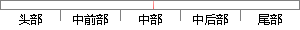

ht,X=h0texpβ1x1+β2x2+β3x3+?
片段位置图

相似结果|
相似片段 1：α3X3+ζROE=β0+β1X1+β2X2+β3X3+ζ1ROE=γ0+γ1X1+γ2X2+γ3X3+γ4Dar+ζ2三、实证分析本文选取截至 2011—2013 年深市创业板上市公司作为研究样本，剔除
相似片段 2：，Logistic模型和 Richards模型对生物量密度大的样地估计偏低，因此本研究采用 Hill模型作为林分生长模型。建立的初始模型为：Y=β0+β1X1+β2X2+β3X3+β4X4+β5X5+β6X6+
相似片段 3：? x3???科技?? x4?，???????? y ??????y=β1x1+β2x2+β3x3+β4x4+b?????? 5.23 ?偸????44? 5.23 ????????????????????
相似片段 4：得到下式：P(Y=1｜x)=[e (α+β∧ 1X1+β2X2+β3X3+…+βnXn)]/[1+e (α+β∧ 1X1+β2X2+β3X3+…+βnXn
相似片段 5：比重模型：Y1=λ0+λ1X1+λ2X2+λ3X3+λ4X4+λ5X5（2） 我国服务业就业溢出效应模型：lnY2=α0+α1X1+α2X2+α3X3+α4X4+α5X525（3） 我国服务业
相似片段 6：μ=β0+β1x1+β2x2+β3x3+β4x4 Vo+P+NPET+NPET<1.5从候选模型中选择最优模型，主要遵循以下三个原则：(1)判断模型的参数极大似然估计值是否存在，即估计得到的模型形状参数是否大于-1。
相似片段 7：披露信息（详见附录 6）。5.2.4 回归分析多元回归模型分析研究的是因变量怎样依赖于多个自变量的[22]。多元回归的模型表达式为：Y=β0+β1X1+β2X2+β3X3+β4X4+……+βnXn+
相似片段 8：)/(1-Pi(Y1))=α0+α1X1+α2X2+α3X3+α4X4+α5X5+α6X6+α7X7+α8X8+u模型②:Y2=β0+β1X1+β2X2+β3X3+β4X4+β5X5+β6X6+β7X7+β8X8+ε设定显著性水平为 0.05。
相似片段 9： 值可以取 0 或 1 两个变量，X1、X2、X3??Xn 作为自变量，在本文就是各公司的财务指标，那么模型可以表示为Ln（Y）=Ln（P1?P）=α+β1X1+β2X2+β3X3+…+βnXn同样
|
※ 片段修改建议 ※
近似词参考：